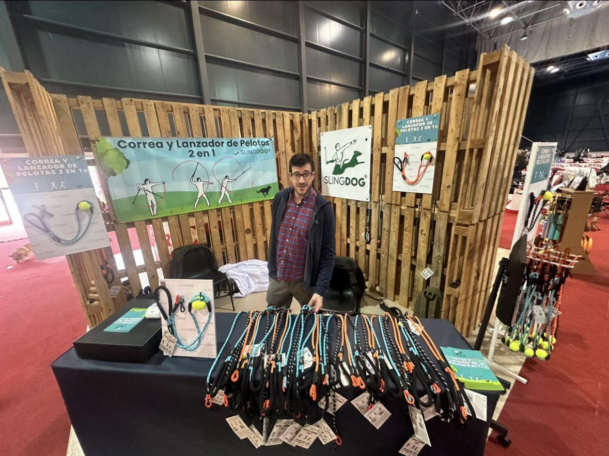
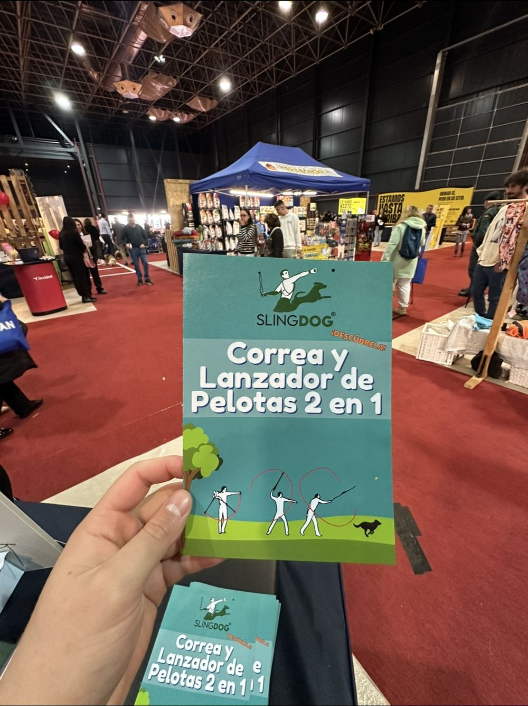

Sobre mí
Iker García

/ Portfolio · 2022 → 2026
Emprendo desde 2022. He vendido ropa online a Estados Unidos, he llevado un bar en un pueblo de Soria, he montado stands de chuches en el BEC y hoy dirijo una consultora de IA para pymes.
Sobre mí
Empecé ADE, y a los 20 años me di cuenta de que estudiar empresa no es lo mismo que hacerla. Lo dejé, monté una tienda online y después entré en LEINN, donde se aprende montando proyectos que facturan.
Me muevo bien en la parte comercial y creativa: encontrar el cliente, contar el proyecto y montar la puesta en escena. Mi propósito es ser la mejor versión de mí mismo, y lo mido por lo que soy capaz de crear.
El camino
Contacto
Busco clientes para IApyme, proyectos donde aportar desde la parte comercial y la entrada en una incubadora.
01 / Antes de LEINN
Mi primer negocio. Dejé ADE a los 20 años y antes de entrar en LEINN monté una tienda online de ropa streetwear. Llevé todo yo: producto, web, Instagram, atención al cliente y envíos.
Buena parte de los pedidos venían de Estados Unidos. Cuando llegaban, los clientes nos mandaban fotos con la ropa puesta y las subíamos a las historias destacadas: era el mejor anuncio que teníamos.


02 / Vuelvo a estudiar
Grado en Liderazgo Emprendedor e Innovación. No hay clases magistrales: se aprende montando proyectos que facturan. Desde el primer curso formo parte de RIVIA, una asociación estudiantil junior empresa donde cada proyecto lleva sus cuentas y rinde cuentas al resto del equipo.
Con RIVIA hemos hecho eventos en Bilbao, el bar de Berlanga de Duero, Frezzyks, viajes de aprendizaje a Nueva York, India y Corea, y de aquí salió IApyme.
03 / Hostelería en la España rural
RIVIA ganó la licitación del Ayuntamiento de Berlanga de Duero para explotar el bar de las piscinas municipales: 6.000 € por dos temporadas. Lo gestionamos estudiantes de LEINN por turnos, de mediados de junio a mediados de septiembre, abriendo de 11:00 a 2:00.
Lo llevé durante tres meses. Proveedores, turnos, caja, cocina sencilla, contratos y pagos a la Seguridad Social, en un pueblo de Soria que en agosto se llena con los veraneantes y las fiestas.
04 / Venta cara a cara
Gominolas liofilizadas vendidas al público. Primero en un stand en el PIN de Navidad del BEC: producto a la vista en baldas de madera y un vídeo en bucle enseñando cómo cruje. Después conseguimos un puesto propio en el centro comercial Zubiarte, en el centro de Bilbao.


05 / Producto físico
Proyecto con un socio de fuera de la universidad: una correa para perro que también sirve para lanzar la pelota. Ayudé a desarrollar el producto y preparé su salida a feria: stand con palés, folletos y la forma de explicarlo en diez segundos a quien pasa por delante.


06 / Primera vez trabajando fuera
Trabajé en Nueva York dentro de una coalición que impulsa la vivienda cooperativa como alternativa entre la vivienda pública y el precio de mercado. En inglés, en otra cultura de trabajo y en un tema que no tenía nada que ver con vender producto.
De ese trabajo salió mi participación en ASETT, el think tank de economía social de MONDRAGON.
07 / Donde estoy
Consultora de inteligencia artificial para pymes con poca digitalización. Yo llevo la parte comercial y creativa; Oier, la técnica. Empezamos como consultores que analizan y se van, y cambiamos el enfoque: ahora funcionamos como el departamento de IA de la empresa y nos quedamos hasta que el equipo usa las herramientas en su día a día.
Qué vendemos
Clientes y colaboradores: Mondragon Unibertsitatea, Gaztenpresa, Amurrioko Enpresak, Autobuses Cuadra, Gorobel Kirol Gunea, MMC Pulidos, Licores Barañano, SCARPA y Casa Garrido. En mayo de 2026 defendimos el proyecto en el TMT de LEINN ante profesores y evaluadores externos.
La web nueva
Estamos rehaciendo la web para contar lo que hacemos hoy. Trabajamos dos direcciones: "Línea IA", donde cada servicio es un destino en un panel de salidas, y "Cuaderno", que explica la IA como una libreta de clase.


08 / Ponente
ASETT es el Arizmendiarrieta Social Economy Think Tank, impulsado por MONDRAGON. En su primer foro internacional, con expertos de cuatro continentes, presenté el panorama de la vivienda asequible en Europa y el hueco que cubre la vivienda cooperativa para las rentas medias.

09 / El proyecto que nos validó
Programa de acompañamiento en inteligencia artificial para once empresas de Amurrio, contratado por la asociación de empresas del municipio. No era un curso: nos sentábamos con cada equipo dentro de su negocio, encontrábamos el cuello de botella real y dejábamos algo funcionando antes de irnos.

El proceso
Tres casos
Autobuses Cuadra. Las vacaciones de los conductores se gestionaban en papel. Montamos un formulario, un asistente de Gemini que lo revisa y genera el informe en Excel, un grupo de Outlook para comunicarse con toda la flota y un chatbot para consultas de horarios. El informe de vacaciones, antes manual cada semana, ahora se genera solo.
Gorobel Kirol Gunea. El WhatsApp del equipo estaba saturado de preguntas repetidas. Desde la segunda sesión tienen un chatbot en la web que responde solo, y el marketing de clases en redes funciona automatizado. Después siguieron trabajando con nosotros.
MMC Pulidos. Nivel digital bajo y todo el conocimiento en la cabeza de dos o tres personas. Con IA creamos manuales visuales paso a paso para cada máquina y OCR para los albaranes. La formación de un operario nuevo ya no depende de que esté el experto.
El resto: Adigrafik, Artomaña Txakolina, Destilerías Manuel Acha, Ekin Consultoría, Etxeguren Zerbitzuak, Gráficas Amurrio, Licores Barañano y Talleres F. Larrinaga.
10 / IApyme fuera de casa
En India presentamos IApyme en inglés ante un público que no conocía nada del País Vasco. En Seúl diseñé con Make Your Way un programa que junta herramientas de IA con Design Thinking para founders y lo llevamos a 11 hubs de startups, entre ellos Google for Startups Campus, Seoul Global Center y DreamPlus Gangnam.

11 / De la tienda de barrio a la tienda online
SCARPA vende calzado, ropa y traje tradicional vasco en Erandio desde hace más de 50 años. Tenían una web antigua en PrestaShop con un hosting caro que no vendía. Soraya y Diego querían una tienda que se pareciera a ellos y que pudieran llevar solos.
Cómo lo hicimos
12 / De cliente de Impulso Digital a proyecto propio
Centros deportivos en Llodio y Amurrio. El diagnóstico: las ocho tareas operativas del día a día pasaban por el dueño. Diseñamos un servicio para repartirlas en unas cuatro semanas: diagnóstico de en qué se va su tiempo, áreas con responsable y manuales de una página, un ordenador central con tablero, incidencias y carteles QR, y formación al equipo.


13 / Producto propio
Software administrativo para destilerías, licoreras y bodegas pequeñas. Nace de trabajar con licoreras de Amurrio en Impulso Digital: el mismo dato se apuntaba en el Excel, en el libro de existencias y en la declaración a Hacienda. Con Alambique cada movimiento se apunta una vez, donde ocurre, y de ahí salen la bodega en cualquier fecha, la trazabilidad de cada lote y el fichero de SILICIE, la declaración de alcohol que estos negocios deben presentar.


El mercado
Escala logarítmica. Valores anuales calculados con 30, 60 y 100 € al mes por cliente. Fuente: INE 2024.
Lo que sacamos del análisis: Euskadi sirve para validar, pero el negocio está en la bodega española, que es el 88 % del mercado alcanzable. La licorera es la puerta de entrada. El rival de una bodega pequeña no es otro software, es el formulario gratuito de la Diputación, así que no vendemos "cumplir SILICIE" sino no copiar el dato dos veces ni equivocarse. Hay dos huecos sin competidor: las sidrerías y un producto que complemente el programa de gestión del cliente en vez de sustituirlo. Precio de partida: 39 a 59 € al mes y un alta de 200 a 400 €.
Cómo lo desarrollamos
Toda la investigación, las decisiones y el código viven en una bóveda de notas enlazadas y en un repositorio de GitHub. La demo la construyó un equipo de agentes de IA coordinado por nosotros: 30 agentes, 22,8 horas activas y unos 467 $ de uso de API. El resultado son 665 tests automáticos, 23 decisiones documentadas y una base de datos con aislamiento entre empresas ya probado.

Siguiente paso: diez entrevistas con elaboradores y una conversación de precio antes de construir más.